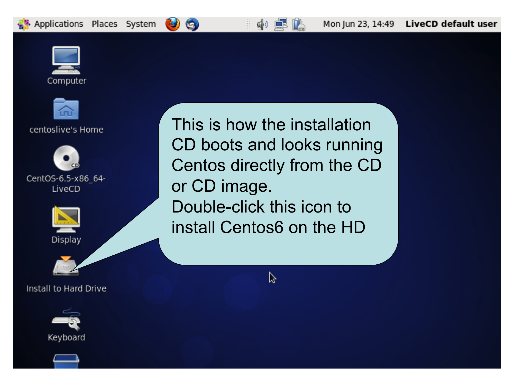
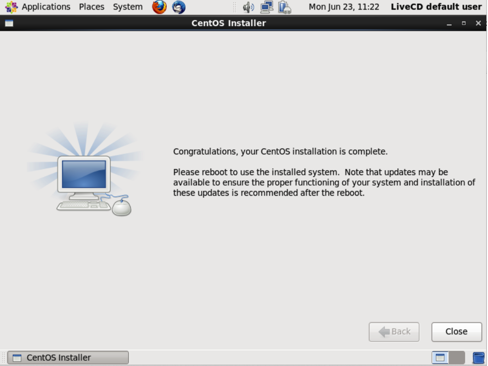

OpenCPI
Installation Guide
DRAFT
Revision History
|
Revision |
Description of Change |
Date |
|
1.0 |
Creation |
2014-06-23 |
|
1.01 |
Add all FPGA and embedded system (Zed) content |
2014-07-07 |
|
1.02 |
Update details for CentOS6 and Zed |
2015-01-31 |
|
1.03 |
Update new simplified ZedBoard Installation |
2015-02-27 |
|
1.1 |
Add ML605 details, change to use new/std doc template, bug fixes |
2015-06-26 |
Table of Contents
2 Overview
3 Installing OpenCPI on Development Hosts
3.1 Installing the Hardware and OS for OpenCPI Development
3.1.1 Obtaining the CD Image File for the OS Installation
3.1.2 Booting from, and Running the CentOS6 installation CD
3.1.3 Performing Software Update on the new CentOS6 Installation
3.1.4 Enabling Your User for “sudo” and installing “git”
3.1.5 Summary of CentOS6 Installation Steps Prior to Installing OpenCPI
3.2 Obtaining the OpenCPI Code Base and Installing Prerequisites
3.2.1 Obtaining the OpenCPI Codebase.
3.2.2 Installing Prerequisite Packages for OpenCPI
3.2.3 Summary of Steps to Prepare the OpenCPI Code Base and Install Prerequisites:
3.2.4 Performing Final Installation Steps from the HD-based CentOS6 installation
3.3 Building and Testing OpenCPI
3.3.1 Building OpenCPI for Native Execution on the Development System.
3.3.2 Basic Testing of the OpenCPI Installation
3.3.3 Initializing your Environment to run OpenCPI Tools, Scripts and Commands
3.3.4 Summary of Steps for Building and Testing OpenCPI's
3.4 Overall Installation Summary
4 Embedded Systems as Target Hosts
4.1 The Digilent ZedBoard with Xilinx Zynq SoC processor
4.1.1 Establishing the Cross-Building Environment for OpenCPI targeting Zynq
4.1.2 Creating and Populating a Directory to Create a Bootable SD Card
4.1.3 Setting up the ZedBoard Hardware to Run OpenCPI
5 FPGA Platforms Based on PCI Express Cards
5.1 Installation of PCI Express-based FPGA Cards
5.1.1 Ensure sufficient power and cooling for the card
5.1.2 Configure any required jumpers and/or switches on the card
5.1.3 Enable Bitstream Loading, and JTAG access.
5.1.4 Plug in the Card and Power up the system
5.1.5 Load an OpenCPI bitstream into the power-up flash memory on the card
5.1.6 Reboot the System and Test OpenCPI's Ability to See the Card.
5.2 Xilinx ML605 PCI-Express Card as an OpenCPI HDL platform
5.2.1 Hardware Setup for ML605
5.3 Altera ALST4 PCI-Express Card as an OpenCPI HDL platform
5.4 Altera ALST4X PCI-Express Card as an OpenCPI HdlPlatform
6.1 Modelsim
6.2 Xilinx Isim
6.3 Xilinx xsim
This document assumes a basic understanding of the Linux command line (or “shell”) environment. It does not require a working knowledge of OpenCPI, although if anything goes wrong with the installation, more experience with OpenCPI may be required. The reference below is an overview of OpenCPI and may prove useful.
|
Title |
Published By |
Link |
|
OpenCPI Technical Summary |
Public URL: https://github.com/opencpi/opencpi/raw/master/doc/OpenCPI_Technical_Summary.pdf |
This document describes how to install OpenCPI. The installation is in layers that are mostly optional depending on which platforms are being used. The core installation is the development “host” that allows both for local software-based execution of OpenCPI applications and components, as well as cross-building for other platforms.
The default installation platform for OpenCPI development hosts is (as of February 2015) CentOS6 Linux x86_64 (64-bit). Other Linux variants and 32-bit systems have been used successfully, but CentOS6 64-bit is the default, tested, installation for a development host. Development hosts can either be actual physical systems or virtual machine installations.
Additional installation options exist for other target processors and technologies such as the Xilinx Zynq SoC (with ARM processor cores and FPGA resources), and various FPGAs. Preference is given to cross-building for embedded CPUs when possible, rather than self-hosting development tools on such platforms, in order to limit the complexities of installing tools on different development hosts.
This document is divided into sections for different classes of target platforms:
Development hosts (virtual and physical)
Embedded CPUs
FPGA platforms.
GPU platforms
In each section, when appropriate, the physical/electrical installation issues will be addressed as well as issues for installing any required tools on the development host.
A final section lists specific reference platforms that are commonly used and frequently tested.
In several sections it is noted that certain features are “roadmap items”. This means that the need for the feature is clear and recognized, and it is on the list of features to be implemented in some future release.
The basic installation of (Linux) development host systems enables the development and execution of OpenCPI components and applications on the development host itself (called native execution). It also establishes the host platform for the tools that enable development for other target platforms, including embedded CPUs, FPGAs, and GPUs.
The installation process takes these steps, in three phases:
Phase 1: Hardware and OS installation
Installing the hardware or creating a bare virtual machine.
Installing and configuring the operating system from CD or CD image file.
Updating the operating system to the latest patch level, and enable “sudo”.
At this this point we have a basic up-to-date OS installation. There are many ways to get here, but we outline a basic approach that works on CentOS6.
Phase 2: Download OpenCPI sources, and install prerequisite software packages.
Install the “git” software package, and use it to download the OpenCPI source distribution.
Install standard prerequisite packages using the package update and installation tools of the operating system distribution
Configure the (non-default aspects of) the OpenCPI environment.
Install and build some prerequisite packages that need special OpenCPI-supplied installation scripts.
At this point we have installed all prerequisites and have a clone/copy of the OpenCPI code tree on our OS installation.
Phase 3: Build and test OpenCPI
Build OpenCPI's core tools, libraries, components and example applications.
Execute some tests to verify that the installation is working.
These steps result in a development system with tools and runtime software ready to support development and native execution (on the development system) of OpenCPI components and applications. In most cases, steps 5 through 8 can be done with a single command.
It is a roadmap item to have a minimal, precompiled “component development kit” that requires fewer steps, and less file space.
The following section describes phase 1 (Installing the Hardware and OS for OpenCPI Development). Subsequent sections describe phase 2 (Obtaining and Configuring OpenCPI and Prerequisites), and Phase 3 (Building OpenCPI and Testing Native Execution). For other target systems and platforms see the sections on embedded systems and FPGA platforms.
The quick description of this OS installation section is: install CentOS6 with the “git” software installed and your user id enabled for “sudo”.
Since a development host has no special hardware requirements, it must simply support the recommended and supported development host operating systems (currently CentOS6 Linux 64-bit). Some development tools (especially those for FPGAs) require large memories and exploit multiple CPU cores and thus the minimum memory should be at least 8GB, with 16B or more preferred. For test purposes, VMs with 2GB have been successful, but slow.
If the development host will also host other embedded CPU or FPGA cards acting as OpenCPI target platforms, the appropriate slots, cooling and power supplies should be considered.
If the development host will also be the runtime host for ethernet-attached devices (such as the Ettus N210), it is sometimes useful to use dedicated ethernet ports for such devices. In this case a host system with multiple ethernet ports/interfaces should be considered. This minimizes interference between Ethernet traffic to the locally-attached platforms, and general LAN or WAN/Internet traffic.
OpenCPI development is commonly hosted on laptops, server machines with card slots, and virtual machines hosted on other operating systems. One example system is a CentOS6 64-bit virtual machine running under the “Parallels” virtual machine system on Apple MacBook Pro laptops. Another is a Dell server with well-powered PCI Express slots for hosting a number of FPGA and/or GPU boards.
The normal operating system installation starts with a CD image downloaded from centos.org (or one it its mirrors). It is currently available from a mirror on this site:
http://isoredirect.centos.org/centos/6/isos/x86_64/
The trailing slash is required in the above URL. The actual file name to download is:
CentOS-6.5-x86_64-LiveCD.iso
Although the more recent version of CentOS6 is version 6.6, there is no LiveCD image available for CentOS6.6, thus the 6.5 LiveCD is still used, which is then updated to CentOS 6.6. The other CD image files for CentOS6.6 have problems.
The md5sum.txt file in the same directory provides the md5 checksum for the file to check against after downloading using the md5 command (on MacOS) or the md5sum command on Linux:
% md5sum CentOS-6.5-x86_64-LiveCD.iso
8c37390fa5d932d03feb05fba13fe92e CentOS-6.5-x86_64-LiveCD.iso
For a physical system, you can burn this file onto a real CD, and then boot from that physical CD. For a virtual machine, you can usually designate that the CD image file be mounted to the virtual machine as a virtual CD device.
Creating a virtual machine usually involves answering a few questions about the to-be-created VM, and then booting it from the Installation CD image file. Using the “parallels” VM system under MacOS, the most import questions to answer are the amount of memory to give to the VM, and the number of cores to provide. Each VM system does it slightly differently.
Booting the development host system from the CD or CD image file proceeds the same whether it is a physical system or a VM.
For the case of using the Parallels VM system on Macs we select “customize settings before installation”, and set memory at 2GB and use a single core.
The CD boot comes up as a CentOS6 system hosted on the CD itself, and there is an icon on the desktop called “Install to Hard Drive”, which installs the CentOS6 OS on the hard drive (or virtualized HD for a VM). Double-clicking on this “Install to Hard Drive” icon will start the generic CentOS6 installation process: see the figure below.

Figure 1: CentOS6 Installation Screen after booting from Installation CD
The “Install to Hard Drive” will then ask questions about:
the keyboard language (we chose U.S. English)
storage device types (we chose Basic Storage Devices)
whether to discard the HD contents (we answer Yes, discard any data)
the network host name of the system (we chose CentOS6-LiveCD-Test)
timezone
root password
whether to “use all space” on the HD (we chose “Use All Space”)
Finally, select “write changes to disk” to make the HD installation complete.
This results in the (possibly virtual) HD-based system having a CentOS6 installation with the screen as follows:

Figure 2: Screen after Installation to HD from CD or CD Image File
Pressing “Close” at this screen exits the initial CD-to-HD installation process. You should now:
Remove/eject the installation CD/CD-image to ensure it is not used on the reboot.
Reboot using the “System->Shut Down...” menu item, and choose the “Restart” option.
This will result in your new HD-based CentOS6 installation booting for the first time.
Assuming you have a good internet connection, you should update your software using the “System->Administration->Software Update” menu item, and, assuming there are updates, the “Install Updates” button. You should repeat this process until there are no updates to install since there can be dependencies that require more than one “Software Update”. When there are no more updates, you should restart again using “System->Shut Down...->Restart”
After restarting it is conceivable that there are more updates, so you should try “Software Update” one more time to verify there are no more updates.
At this point you have a fully updated (for the default set of software packages) CentOS6 system. If you are on a VM system with support for “snapshots”, you should probably take one at this point.
A number of scripts supplied by OpenCPI require that the user be enabled for the “sudo” command. You should add your user account to the list of accounts that are allowed to use “sudo”. For CentOS6 Linux, this can be accomplished in a terminal window (from Applications->System Tools->Terminal). With <RootPasswd> and <User> being replaced by your root password and your user name, do:
% su
Password: <RootPasswd>
# echo <User> ALL = ALL >> /etc/sudoers
# exit
%
The “% “ and “# “ are just command prompts: you don't type them. Be careful to use the two “>>” characters to append the line to the file. Of course if you are experienced with Linux, you may do this many other ways.
OpenCPI has several software prerequisites, but only one of them is required to be installed before the OpenCPI code base is installed: git. The git program is used to download a local copy of the code base, and after that, a script in the code base is used to finish the installation of OpenCPI. To obtain “git”, the following command should be issued at the command prompt in the terminal window:
% sudo yum -y install git
This ensures that you have the “git” package installed on your system so that we can use the “git” command. Git is the distributed revision control system used by OpenCPI. We will only use a few git features and commands for installation.
Download the CentOS6 LiveCD CD image file, and check the md5 digest.
For physical systems, burn a CD from that file.
Boot the physical or VM system from the CD or CD image file.
Run the installer using the “Install to HardDrive” icon and answer questions.
Boot your newly installed system and answer more questions.
Upgrade the software repeatedly until there are no more updates available.
Enable your user ID for the “sudo” command.
Install the “git” configuration management software.
You now have an installed, up-to-date operating system, with a user account that is sudo-enabled and the “git” configuration management package installed.
Assuming you are in a terminal window, in the directory where the codebase should go (in a subdirectory named opencpi, which the following command will create), type:
% git clone https://github.com/opencpi/opencpi.git
This will create an opencpi subdirectory and populated it with the current OpenCPI code base: i.e., a “git clone” of the code base that can be easily updated in the future. You should change into this directory for further commands:
% cd opencpi
By default, the “git clone” operation downloads the “latest and greatest” or “bleeding edge” version of the code. This may or may not be what you want. After downloading, if you want a specific, perhaps more stable release, you use the “git tag” command to list the tagged releases available, then set the code base to the one you want using “git checkout”, using the release tag (as listed by “git tag”) as an argument.
The OpenCPI releases are identified by calendar quarter (released at the end of the quarter), and patch release within that quarterly release. The release compatibility policy is to maintain component binary compatibility within the releases for a given quarter, and source compatibility (requiring rebuilding) for new quarterly releases. Patch releases within a quarter still require rebuilding OpenCPI itself since the distribution is source-based for now. Early releases of a next-quarter release are identified with minor releases starting with “rc” for “release candidate”. Here are some examples of OpenCPI release tags.
% git tag
OpenCPI-1.0
OpenCPI-2015.Q1.rc0
%
To set the release of the codebase you downloaded, you use the “git checkout” command with the release tag as an argument:
% git checkout OpenCPI-2015.Q1.rc0
This will result in some messages about “detached HEAD”, which can be ignored unless you are modifying OpenCPI itself, rather than just using it for component or application development. To do development on OpenCPI itself, and potentially submit patches, etc., you need to know more about git. To simply return the codebase to be the latest version, you can do that by using “master” as the tag.
% git checkout master
Whenever you check out a different tag after any building activity, you should perform a clean operation on the code base:
% make clean
The next step is to run a script in the OpenCPI code base that will install other required packages. The script does this in two ways, depending on whether the package:
is a standard optional package for CentOS6 using the CentOS “yum install” command, or
needs OpenCPI-supplied scripts to do a custom-for-OpenCPI installation
This script will first create the /opt/opencpi directory since that is where the second category of prerequisite packages are installed. To install the prerequisites, type:
% scripts/install-prerequisites.sh
This step and the next two can all be executed in one step using the “scripts/install-opencpi.sh” script for those who are impatient!
The standard packages from the CentOS repository will be installed globally on the system, and thus be available to all environments and applications. If they are already installed, nothing will be done. To see which packages are installed, look at this script and the ones it calls. The second category, installed with OpenCPI-supplied installation scripts, will be installed in a place (/opt/opencpi), where they will be used by OpenCPI, but will not be available globally and will not affect any other installation of the same package. If you need this directory to be somewhere else, make a symbolic link in /opt/opencpi that points to that other place.
It is a roadmap item to allow a directory name other than /opt/opencpi to be used.
% git clone https://github.com/opencpi/opencpi.git
% cd opencpi
% git tag
% git checkout OpenCPI-2015.Q1.rc0 # use the appropriate tag
% scripts/install-prerequisites.sh
You now have an OpenCPI installation with all prerequisites installed, and are ready to build OpenCPI.
When CentOS6 boots from the HD for the first time, it of course asks more installation questions. This phase of installation is done by what CentOS6 calls the “Setup Agent”. It will ask the following questions, which you should answer as you prefer. The “forward” button is in the lower right corner of the screen.
Agree to the license
Create a user (use the “Advanced” button if you need to control UIDs*)
Time of day, and whether to “Synchronize date and time over the network”.
(we choose to synchronize date/time over the network).
Enable Kdump if needed for kernel debugging, by reserving some physical memory. (we choose to uncheck/disable kdump).
The “finish” button on the kdump screen finishes the installation and the login screen comes up and you should login as the user you just created (not root).
Now that all the prerequisites are installed, we can build OpenCPI.
Building OpenCPI builds several different things in different steps, but all with one script. That building script will:
Build the core software infrastructure libraries, and utility command executables.
Build the software component libraries. (components in the default library usable for applications)
Build some example applications
Build the OpenCPI Linux device driver
All these steps are executed by the “build-opencpi.sh” script:
% scripts/build-opencpi.sh
When this script succeeds, all software aspects of OpenCPI have been built and can execute in the development host environment. No OpenCPI code has been executed at this point.
You now have an OpenCPI installation with all of OpenCPI, including libraries, commands, software components and applications, installed and ready to run. This does not include FPGA tools, code, or bitstreams, which are installed/built elsewhere.
Run the scripts/test-opencpi.sh script to perform a simple “smoke test” to see if OpenCPI appears to be installed correctly. This script runs a set of tests that are simple pass-fail tests that should complete successfully.
% scripts/test-opencpi.sh
You now have an OpenCPI installation that appears to work correctly when running native applications.
Up to now, all the installation scripts have relied upon an environment that is set up with a standard script without any customization. This script is called env/default-env.sh. You should make a copy of this script (say in my-env.sh) for yourself and make any changes necessary for your environment. For native execution, no changes may be necessary, but when third party tools are required for other platforms, their locations and/or license file locations typically need to be set in this file.
This script must be sourced (not executed) in any command shell or window that will use OpenCPI for development. This is accomplished by:
% source my-env.sh
It may be convenient to put this line in your “~/.profile” or “~/.bashrc” files, but do this with care since it may affect all command windows and scripts, which may cause problems interacting with other packages' environment settings.
The “jkvm6.sh” script is an example that shows a number of possible settings, especially for FPGA tools.
% scripts/build-opencpi.sh
% scripts/test-opencpi.sh
(Create and customize your own environment setup script)
% source my-env.sh
(Do this step in any window or shell that will use OpenCPI)
The steps to be taken to install OpenCPI on a typical development system are:
Obtain an Operating System Installation CD (or for VMs, a CD image file)
Install the operating system
Update the operating system to the current patch level.
Enable the current user for “sudo” permission.
Install the “git” configuration management software if not already installed.
The above is a generic OS installation that you may already have done and can be done in many ways.
Get the OpenCPI code base using “git clone” and check out the desired version.
Run the OpenCPI installation script for installing prerequisite packages.
Run the script to build OpenCPI
Run the script to do the installation runtime test of OpenCPI
10. Create and customize your environment setup script.
Steps 7, 8 and 9 can be accomplished with a single script that is part of OpenCPI:
% scripts/install-opencpi.sh
In this document we use the term “embedded systems” for processors and systems that will execute OpenCPI components and applications, but are generally not used to build or compile OpenCPI or components. Our primary example is the Digilent ZedBoard, which has a Xilinx Zynq SoC chip which contains 2 ARM cores for software and an FPGA section for “gateware”.
When using any embedded system, the first step is to install the appropriate cross-compilation tools on your development system. While some embedded systems can actually host their own tools, we generally avoid this in order to avoid burdening the embedded platform with such tools, and also avoid challenges associated with porting the OpenCPI development environment to a new platform.
If no Linux-hosted cross-tools are available for the embedded target, then the OpenCPI build/development environment must indeed be ported to that platform, and any incompatibilities must be addressed. The OpenCPI development environment does not have many dependencies, but they must all be addressed on the new development platform. This is a partial list of dependencies that some aspects of the OpenCPI development environment require:
C and C++ compilers and linkers
Bash and Make
Python
Miscellaneous POSIX utilities such as “tr”, “sed”, “cp”, etc.
When other cross-tools and/or FPGA tools are required for a target platform, other prerequisites may be required.
Along with using cross-compilers we generally assume (in a development context) that the embedded system has a network interface that will allow it to mount and access the file systems on the development system where the OpenCPI codebase is built and cross-built. This also requires that the development system be enabled as a file server, and any associated firewall issues are addressed between the embedded system and the development host.
When network access to the development system is unavailable, inconvenient, or inappropriate, then a small subset of the OpenCPI cross-built environment is copied to the embedded system to enable execution without any network. This is called “standalone” or “embedded” mode for OpenCPI on the embedded system.
One key build option for OpenCPI is whether to build all libraries and executables with static linking or dynamic linking. When built with static linking, executables are truly standalone and don't require libraries to be copied to the embedded system.
For each embedded system that is supported, we divide the instructions into these steps:
Install cross development tools and cross-build OpenCPI on the development system.
Create a bootable kit (usually an SD card) to install on the embedded system, using the development system.
Set up the hardware as needed for OpenCPI.
Install the bootable kit (usually plugging in an SD card) on the embedded system.
This hardware platform is the smallest and least expensive platform that can support software and FPGA development using OpenCPI.
Supporting the even-smaller “MicroZed” platform (with the Z-7010 device) is considered feasible and is a roadmap item.
The steps below describe the process of building OpenCPI and preparing a bootable SD card from scratch, including assets from a Xilinx Linux kernel release as well as those built in OpenCPI. However, there is a shortcut that allows you to bypass all these steps if you just want to quickly run OpenCPI on a ZedBoard: a directory in the OpenCPI code base contains a prebuilt SD card directory that can simply be copied to a real SD card that can then be inserted into a ZedBoard before restarting it.
Assuming the SD card (first partition usually entitled “BOOT”) is mounted on /media/xyz, the following commands will remove its current contents and copy the OpenCPI contents onto it and unmount it so you can remove it and plug it into a ZedBoard.
% rm -r -f /media/xyz/*
% cp -r -p platforms/zed/release/OpenCPI-SD/* /media/xyz
% umount /media/xyz
To use this shortcut, you still need to at least arrange for console access to the ZedBoard, as described in the section below.
After removing the SD card, plug it into a properly configured (powered off) ZedBoard, power on and run some simple applications that are already there. If this will serve your purposes (initially), you can skip the rest of this section and proceed to the section for ZedBoard hardware setup. Of course you can add any of your own files to the SD card.
Summary: you can use the pre-built SD card contents unless:
You need to use a more up-to-date OpenCPI version.
You need a more up-to-date or different Xilinx Linux release.
This section describes how to build OpenCPI for the ZedBoard and enable building applications and components for it. It is what you do on a development system (not on the ZedBoard) before doing anything on the ZedBoard hardware. The basic steps are summarized at the end of this section.
There are two aspects to building for Zynq: user mode code and kernel driver code. Both rely on the cross-compiler supplied in the Xilinx tools release (the EDK). Thus the first prerequisite is to install Xilinx ISE and EDK tools. We will refer to the Xilinx release number as $XRN, and the pathname where Xilinx releases are installed as $XROOT. In a typical installation, $XRN might be 14.6, and $XROOT might be /opt/Xilinx, so the current release would be installed in the
/opt/Xilinx/14.6
directory. This procedure has not been tested on ISE releases prior to 14.6 and is unlikely to work on prior releases. Be sure to include the EDK in the installation (when running the Xilinx installer) since that is where the cross compiler and some other required files come from. At the current time OpenCPI does not support the Xilinx Vivado tools, only ISE and EDK. The XRN and XROOT variables are notional for this document. You do not need to actually set or use those variables.
We assume a Xilinx ISE+EDK installation on CentOS6/64-bit Linux, the standard OpenCPI development host. Xilinx officially supports Red Hat Enterprise Workstation 6 (64-bit), of which CentOS6/64-bit is a free “clone”, without any support.
We also assume that you have created a clone of the OpenCPI git repository, placed it in a directory on a development system (e.g. /home/myself/opencpi), and built and run OpenCPI on that development host system. Instructions for this are above. When an OpenCPI environment is established on the development system, the root of the OpenCPI distribution will be in the OCPI_BASE_DIR environment variable.
The OpenCPI installation includes certain artifacts that are derived from one or more Xilinx Linux kernel releases. Under normal circumstances these can be used as they exist in the OpenCPI tree. The platforms/zed/release file is a link to the Xilinx linux release (inside the OpenCPI tree) that will be used during the remaining installation steps. If you need to change or customize the Xilinx Linux kernel release, see the platforms/zed/README.linux file. We also assume a successful OpenCPI development host installation (and runtime tests) as described above. In the standard environment for OpenCPI development, the OCPI_BASE_DIR environment variable specifies where the OpenCPI code base resides.
In summary, the prerequisites for using OpenCPI on the ZedBoard (and other Zynq-based platforms) are:
A working OpenCPI installation on CentOS6/64-bit at $OCPI_BASE_DIR
A Xilinx ISE+EDK installation at $XROOT/$XRN, e.g. /opt/Xilinx/14.6
To build OpenCPI for Zynq/ARM software development, we use the Xilinx-EDK-supplied ARM/Zynq cross-build tools (cross from CentOS6 x86_64 to Zynq). There is nothing specific to the ZedBoard platform about these Zynq tools. The ocpized.sh file in the $OCPI_BASE_DIR is an example you should copy (say, into myzed.sh) and customize as necessary for your own environment (perhaps changing the name of the license file). Your script may set the OCPI_XILINX_DIR, OCPI_XILINX_VERSION, and OCPI_XILINX_LICENSE_FILE environment variables if they are not correct. Assuming you have already built OpenCPI for CentOS6/64-bit, you need to source this customized environment script in a new shell/window, in $OCPI_BASE_DIR, e.g.:
% source myzed.sh
Sourcing this file in a window/shell that was previously used for OpenCPI (e.g. for building OpenCPI for the development host), could cause problems.
Sourcing this myzed.sh script establishes a cross-build environment by setting environment variables that point to the cross-compilation tools in the Xilinx EDK installation (among other things).
You do not need to run any Xilinx-supplied initialization scripts. Using these Xilinx ISE+EDK tools for cross-compilation has been tested in ISE 14.6 and 14.7.
Before building OpenCPI for the embedded target, the prerequisite libraries must be installed and cross-built for this embedded target. This uses the same script as for the development host, but it is running in a cross-building environment set up by your myzed.sh script.
% scripts/install-prerequisites.sh
After the above environment setup, the normal OpenCPI build should function and succeed, but will now be cross-building for the Zynq.
% scripts/build-opencpi.sh
This should succeed and produce no unusual warnings. It is essentially equivalent to:
% make && make rcc && make examples && make driver
It will build the Zynq versions of all OpenCPI libraries, executables, components, examples, and kernel driver for the Zynq Linux platform. This will not interfere with the libraries, executables and components already built for the native Cent06/64-bit environment. With OpenCPI, all compilation results are placed in target-specific directories, so building for multiple targets in the same tree is supported and expected.
Building the OpenCPI kernel driver relies on the release of the Xilinx Linux kernel that is already estalished in the OpenCPI tree, in platforms/zed/release. In particular, the kernel aspects of the OpenCPI build rely on a "kernel headers" package created there.
In order to build the HDL/FPGA code, including test bitstreams, you do:
% make hdl HdlPlatforms="isim_pf zed"
This will build all the primitive libraries, components, bitstreams for ZedBoard's Zynq chip and for isim (the ISE simulator). If you had already built OpenCPI HDL/FPGA code for other Xilinx targets, the isim_pf aspect of the build may already have been done and thus will not be rebuilt. For previous OpenCPI HDL developers: the OpenCPI “HdlTarget” for the ZedBoard is "zynq" and the “HdlPlatform” is "zed". This step can take an hour or more.
This is the end of building all the OpenCPI assets for development and execution on the ZedBoard.
The final software step to perform on the development system is to create and populate a directory to be copied to an SD card that can be plugged into the ZedBoard for booting. The contents of the SD card directory tree is a combination of:
Binary files from a Xilinx Linux Kernel release from http://www.wiki.xilinx.com/Zynq+Releases
Binary files built and stored in the OpenCPI tree that were patched from the Xilinx release and linux source code.
Core files from the OpenCPI tree built from sources.
Component library files from the OpenCPI tree (RCC and HDL).
This resulting SD card can be used standalone (independent of the network) or based on a network connection that allows the zynq platform to communication with the development system. The network-based development setup mounts the development system from the ZedBoard using NFS, so usually very few files really need to be on the SD card itself. In standalone mode, OpenCPI can be used with the files on the SD card, and with no network.
There is a populated SD card tree at platforms/zed/release/OpenCPI-SD,that can be used directly, but it is not updated for every patch release in the repository. These instructions prepare a directory tree for an SD card locally (in this directory), to be copied to a real SD card, that can then be unmounted, plugged into the Zed board, and used to boot the ZedBoard.
There are two files that must be customized before making the SD card. One for standalone mode and one for network mode (NFS mounting of the development system). If you are not using the network/NSF mode you can ignore the second one.
You should make copy of the defaultsetup.sh file into mysetup.sh (here in the platforms/zed directory) and customize it, in particular, specifying at least:
The system to be used as a time server
Your timezone.
At least in CentOS6, the following command will print what the timezone should say:
% tail -1 /etc/localtime
These items are on the command line in mysetup.sh that runs the internal zedsetup.sh script, which configures the ZedBoard system for OpenCPI each time it boots. Since the ZedBoard has no real time clock these are needed to set the time properly. If you truly have no network connection, you can set the time server to "-" and set the time manually when the ZedBoard system is booted.
When the SD card is created, this script will be copied to it, and it is run each time the system is booted (manually for now).
% cp defaultsetup.sh mysetup.sh
{ customize mysetup.sh }
Network mode is when you mount the development system (and the OpenCPI tree), as an NFS server with the ZedBoard as NFS client. This provides easy and dynamic access to all of OpenCPI, and presumably any components and applications you may have. You can avoid customizing this file if you only want to use standalone mode, but you must make sure the mynetsetup.sh exists.
Make a copy of the defaultnetsetup.sh file into mynetsetup.sh (here in the platforms/zed directory) and customize it, in particular, specifying at least:
The NFS "share name" of your development system.
The directory name relative to that mountable file system where the OpenCPI tree lives.
The system to be used as a time server.
Your timezone description.
All these items are on the command line in mynetsetup.sh that runs the zednetsetup.sh script, which configures the zed system for OpenCPI each time it boots, for network/NFS mode. The network address of your development system will be specified later, dynamically, as an argument to mynetsetup.sh.
% cp defaultnetsetup.sh mynetsetup.sh
{ customize mynetsetup.sh }
Note the "mynetsetup.sh" script you copied to the SD card takes the development system's IP address as an argument. If it is fixed, you could hard-wire it in this script.
To create a directory that can be copied to an SD card, you use the makeSD.sh script. If run with no arguments it describes what it will do. If the single argument is "-", then it will populate the SD card based on the current Xilinx Zynq Linux release installed in the OpenCPI tree. The current Xilinx Linux release is shown by doing: "ls -l release", which shows a link to the current release. If there are other releases present, you can select a different one by indicating it as the first argument.
This script depends on the OCPI_LIBRARY_PATHenvironment variable, since it copies all valid component artifacts found in this path.
% ./makeSD.sh -
This script combines kernel release binaries from Xilinx, some linux artifacts customized for OpenCPI, and the various compiled files in the OpenCPI tree. It creates a directory called "release/OpenCPI-SD" after removing the previous one. It also includes the mysetup.sh and mynetsetup.sh that you have just customized. You can further customize it if needed to add contents to the SD card, or of course put additional content on the SD card itself later.
This step completely initializes, formats, and partitions the SD card, whereas the next step copies the contents onto it. This step creates a 200MB boot partition in FAT32 format, and also creates a second linux ext2/ext3 file system using the rest of the space on the card. Because it is partitioning the drive from scratch, there must be no mounted file systems on the drive when it is executed.
If you don't want a "fresh" SD card, but want to use an existing one that is correctly formatted for a ZedBoard boot disk, you can skip this step.
You must determine the linux device name of the SD card, usually something like /dev/sdb. The "sudo fdisk -l" command describes all disk devices on the system and can help in identifying the device for the SD card you plugged in. Using the wrong device name could erase the disk, so be careful! Also, you can use the "mount" command to see if any of the partitions of the disk are already mounted. They should be unmounted before running this script.
The following script completely reinitializes/partitions/erases the SD card for use with the ZedBoard. The single argument is the linux disk device name. The "sudo" is usually necessary unless the device has general write permission.
% sudo ./formatSD.sh /dev/sdX
The source of this step is the directory created by the makeSD.sh script above, which is release/OpenCPI-SD. If you have just formatted the SD card with the previous step, you would need to mount it first using the mount command, or simply unplug it and plug it in again, which normally automatically mounts it.
After the “BOOT” partition is mounted (e.g. /dev/sdb1 is mounted on /media/xyz) do:
% rm -r -f /media/xyz/*
% cp -r -p release/OpenCP-SD/* /media/xyz
If you have more files to add, do so now so you can then remove it using:
% umount /media/xyz
At this point you have a development environment ready for the ZedBoard, have built all the libraries, executables, components, and examples for both software and FPGA, and have prepared a bootable SD card.
Assuming you not taking the shortcut mentioned at the top of this section...
From the top level directory of an OpenCPI installation a.k.a. OCPI_BASE_DIR, that is already functional for the CentOS6 system, with a Xilinx ISE+EDK installation, in a fresh/new shell/window, do these steps:
% cp ocpized.sh myzed.sh
{ customize myzed.sh for your build environment, e.g. where Xilinx tools are }
{ customize the Xilinx Linux release if needed - see README.linux if you need to}
% source myzed.sh
% scripts/install-prerequisites.sh
% scripts/build-opencpi.sh
% make hdl HdlPlatforms='isim_pf zed'
% cd platforms/zed
% cp defaultsetup.sh mysetup.sh
% cp defaultnetsetup.sh mynetsetup.sh
{ customize mysetup.sh and mynetsetup.sh for your environment, etc. }
% ./makeSD.sh -
{ If you need a freshly formatted SD card:
plug your SD card in and figure out what the disk device name is for it.
unmount any mounted partitions on the drive/disk
BE CAREFUL TO GET IT RIGHT SINCE THAT DISK WILL BE ERASED
% sudo ./formatSD.sh /dev/sdX
}
{ Plug in the SD card, e.g. mounted as /media/xyz }
% rm -r -f /media/xyz/*
% cp -r -p release/OpenCP-SD/* /media/xyz
% umount /media/xyz
Now everything is built and ready for the ZedBoard, and you have a bootable SD card for using OpenCPI on a ZedBoard. The next section describes how to install the hardware and set it up to execute based on the OpenCPI system you just built and the SD card you created. There are two usage modes, one is network-based, where the ZedBoard can talk to the development (CentOS6) system via network and NFS, and the other is standalone/embedded mode where OpenCPI can be used even without a network connection.
Now everything is built and ready for the ZedBoard: you have a bootable SD card for using OpenCPI on a ZedBoard.
This section describes how, after installing Xilinx tools, installing and building OpenCPI (software and FPGA aspects) for Zynq/Zed, and preparing an SD card, you actually set up your ZedBoard itself to run OpenCPI applications and components on the Zed itself.
These steps do not enable any particular devices that might be attached to the FPGA/PL part of Zynq.
Always be careful of static electricity when touching the board. Touch some metal shell first each time. Start with the power cable disconnected. The metal shell of the network connector is a good thing to touch first.
It is a good idea to have the Digilent ZedBoard Hardware Users Guide at:
http://www.zedboard.org/sites/default/files/documentations/
ZedBoard_HW_UG_v2_2.pdf
The “Jumpers” section has good photographs showing the location of jumpers on the board. Only change the jumpers when the power is OFF. These are the required jumper settings:
MIO 2: set to GND
MIO 3: set to GND
MIO 4: set to 3V3
MIO 5: set to 3V3
MIO 6: set to GND
J18: VADJ Set to 1.8V (the setting is labelled 1V8)
JP6: shorted (only needed for "CES" silicon versions)
JP2: shorted (needed to power USB peripherals or dongles).JP2: shorted
JP6: shorted (note: we didn't have enough jumpers and this wasn't needed)
All other jumpers should be left unshorted. The power switch should be off.
Notice that the SD card is plugged in with its label down since that connector socket is on the back of the board.
This cable is what provides access to the ZedBoard's serial console. It must be connected to a system with a terminal emulator set to 115200 board, 8 data bits, 1 stop bit, no parity. There are two different connectors on the board: be sure to use the one labelled: UART, and not the one labelled USB OTG.
With the power supply cable connected, turn the power switch on. The green POWER LED should come on. The system has actually booted itself, but without a console attached you can't really see anything.
If something smokes, you and the board are toast!
Since the OpenCPI development environment is running on a Linux system (usually CentOS6), you can just plug this USB cable into that Linux system, and it will automatically create a "/dev/ttyXXX" file for this connection when you plug it in and the ZedBoard is powered up. You need to determine this pathname and watch it come and go when you disconnect and reconnect the USB cable (or when the ZedBoard is powered down and up). Typically the file name is /dev/ttyACM0, but not always.
Without any other configuration of the Linux development host, you typically have to add read/write permission to this "/dev/tty*" file manually each time the cable is connected and/or the ZedBoard is powered on, using the command:
% sudo chmod a+rw /dev/ttyACM0
(assuming the /dev/ttyXXX file created for that cable is /dev/ttyACM0, which is the default for the first such hot-plugged USB/serial cable on CentOS6). Again, this must be done each time the board is power cycled or disconnected.
Automating this (with udev configuration) is a roadmap item.
With the /dev/ttyXXX existing and with proper permissions, you must run a serial console terminal emulator program on the development system that is attached to the USB cable from the UART connector. There are many alternative terminal emulation applications to provide for this USB remote serial console for the ZedBoard (or any similar board). One that is available in the standard CentOS6 repository is "screen", obtainable by simply using:
% sudo yum install screen
Then in any terminal window, you can do:
% screen /dev/ttyACM0 115200
To exit this program, you use the sequence: Control-a followed by backslash.
For Emacs users, you can use the serial terminal emulator built in to Emacs, by simply doing: M-x serial-term in a window, and providing the /dev/ttyACM0 name and 115200 baud rate when prompted. There are two modes in this window, "char" and "line". The default is "char" mode, where every character typed is immediately sent without any interpretation at all. This means no emacs commands work in that emacs window and you have to use the mouse to switch to another emacs window. The "line" mode is more line buffered, like "shell" mode, and all line editing and other emacs commands work fine. But the display can get confused in line mode so you have sometimes switch back and forth: control-c control-j switches to line mode, control-c control-k switches to char mode, control-c control-c sends a control C in char mode.
With a good terminal emulator connection, hit return a few times in the serial console window to see the "zynq login:" prompt, or, if the system was previously logged in and running, you might see the "root@zynq:~#" prompt. You must login as "root" with the password "root".
Sometimes if the screen or terminal emulator is confused, or if, after hitting "return", the prompt stays on the same line, try typing the command "clear", to clear the state of the terminal emulator.
In normal usage it is generally best to log into the board using SSH and leave the console window alone. After the board boots, you can log in with SSH without using the console at all if you know the DHCP network address — or see it on the console output. The "ifconfig" command on the zed will print the internet address.
You can now log in (root, root), and see that rebooting works fine by both trying the "reboot" command, as well as pressing the reset button on the board (labeled: PS_RST).
Now you know Linux can boot, and that you have console access.
If you want to start in standalone mode, without needing a network or connection to the development host, skip to Standalone Mode section xsbelow.
To enable the network connection to the development host, connect the ethernet connector on the ZedBoard to a LAN with DHCP. The green light that is part of the network connector socket should come on to indicate that you have a network connection.
You can also use USB network dongles, with the appropriate cable adapters, plugged into the "USB OTG" connector.
Reboot the ZedBoard to have it come up properly on the network. You can reboot either by typing the "reboot" command, pressing the "PS-RST" button, or turning the power switch off and on. Power cycling might cause you to need to do another "sudo chmod a+rw /dev/ttyACM0". After reboot, and re-login on the console, you can use the ifconfig command to confirm that the "eth0" interface (or "eth1" for USB Ethernet dongles) has an internet address, courtesy of DHCP. E.g. this shows we have the internet address 10.0.1.108.
root@zynq:~# ifconfig
eth0 Link encap:Ethernet HWaddr 00:0A:35:00:01:22
inet addr:10.0.1.108 Bcast:0.0.0.0 Mask:255.255.255.0
inet6 addr: fe80::20a:35ff:fe00:122/64 Scope:Link
UP BROADCAST RUNNING MULTICAST MTU:1500 Metric:1
RX packets:42 errors:0 dropped:1 overruns:0 frame:0
TX packets:14 errors:0 dropped:0 overruns:0 carrier:0
collisions:0 txqueuelen:1000
RX bytes:6793 (6.6 KiB) TX bytes:1737 (1.6 KiB)
Interrupt:54 Base address:0xb000
The network address is also printed out on the console during booting. To check connectivity, use ping in both directions: ping your development host from the ZedBoard console and ping your ZedBoard from your development host. If both pings work you have network connectivity.
There are many "cookbook" files for setting up NFS on Linux systems. You need to export a mountable directory above the directory where OpenCPI is installed.
An example might be, if OCPI_BASE_DIR was /home/user/opencpi, and /home was NFS-mountable, then the “share” would be /home, and the OpenCPI subdirectory would be user/opencpi. On CentOS6, you can enable NFS using the System->Administration->Services menu item. You may also need to enable local clients in the System->Administration->Firewall menu item.
To verify you have NFS connectivity try to manually mount it on the ZedBoard by typing, on the ZedBoard console:
% mount -t nfs -o udp,nolock,soft,intr <ipaddr>:<dir> /mnt/net
Where <ipaddr> is the address of the development host, and <dir> is the directory being exported/shared by the server. The OpenCPI directory will be underneath that directory.
If that succeeds, you have a good NFS connection. unmount it using the "umount" command since the automated scripts will mount it next.
When Linux boots on the ZedBoard from the SD card created as above, it creates a memory-based root file system, initialized from decompressing the uramdisk.image.gz file on the SD card. It also mounts the SD card itself as a file system, at /mnt/card. This means that anything you write to the root file system is not persistent. To create any persistent file you use SD file system, at /mnt/card.
Our standard setup uses the built-in NFS client to access the OpenCPI code base from these types of systems (in a development environment).
After booting, and logging in as root (either via the serial console or ssh), the first command should be to source the startup script on the SD card, supplying the development host's IP address as an argument.
root@zynq:~# source /mnt/card/opencpi/mynetsetup.sh 10.0.1.108
This command, executed once per boot (not per ssh login), are all that is necessary to enable OpenCPI (unless you take additional measures to execute them automatically at boot time). If this script works ok, then it proves you can run OpenCPI utilities (and applications).
After this commands is run after booting, any new logins will automatically run the appropriate setup actions for that login shell.
The mynetsetup.sh script above already sets the path to find OpenCPI executables and software components. It may also change to some working directory. Below "xxxxxx" is the path to get to the OpenCPI development tree. The default setup script (that you modified), in fact changes to this directory in any case. In standalone mode, it changes to the /mnt/card/opencpi/xml directory.
To run a simple test application:
zynq> ocpirun -v -d -mbias=rcc testbias
This should run the testbias application (using file_read->bias->file_write) components, forcing it to run in software, and not the FPGA.
There is no bitstream loaded on power up, but one will be loaded automatically as needed. So, assuming your OCPI_LIBRARY_PATH points to the builtin bitstream (which the default setup file do in both network and standalone mode), you can run:
zynq> ocpirun -v -d -mbias=hdl testbias
which runs the same application with the bias component on the FPGA, with the appropriate bitstream being automatically loaded.
The roadmap items that will make this all a bit more convenient are:
Perhaps cause the "setup" script to be run automatically at boot time,
avoiding the single command to run the startup script
On the development system, provide udev rules to avoid the "sudo chmod" command when using the terminal emulator.
To run in standalone mode, which has no requirement of a network, but can still use one if present, you run, after booting, the following command:
# source /mnt/card/opencpi/mysetup.sh
This will set up the environment to run some applications locally based on files in the SD card, without accessing any files on the network.
The opencpi subdirectory on the SD card has executables and scripts in the "bin" directory, component artifacts in the "artifacts" directory, and xml applications in the "xml" directory.
The steps to run OpenCPI applications without and with FPGA components are in the previous two sections and work in standalone mode as well as network mode.
Any development host system that has PCI Express slots can host FPGA cards where the FPGA is attached directly to the PCI Express fabric. All PCI Express-based FPGA cards require that the development host installation is complete and functional, including the Linux kernel driver. At this point supported FPGA cards can be installed and used as OpenCPI processors that can host OpenCPI components built for those FPGAs.
Using only subsets of the complete OpenCPI development environment in these configurations is a roadmap item.
Each PCI Express-based FPGA card has its own installation issues, but most installations are similar. Assuming there is already OpenCPI support for the card, the steps necessary to bring it up as an OpenCPI processor are:
Ensure sufficient power and cooling for the card
Configure any required jumpers and/or switches on the card
Enable bitstream loading, and JTAG access.
Plug in the card and power up the system
Load an OpenCPI bit file into the power-up flash memory on the card
Reboot the system
Ensure the card is now recognized and usable.
This section describes the installation process in general that applies to all PCI Express-based FPGA cards. Following sections provide specific details for some of the cards that are supported for OpenCPI. We use the term “bitstream” in this section for the file containing an FPGA configuration to be loaded into the FPGA. Bitstream files are created by the OpenCPI development process when the target platform is an “HDL” platform, which usually means an FPGA.
PCI Express-based FPGA cards have a range of cooling and power requirements, and some even require that the chassis and box they are plugged into be left open for access to connectors etc.: they are “lab cards” that remain fully exposed. Others are typical PCI-Express cards that simply plug into a slot, and the box can be closed. Frequently there are LEDs and other indicators, switches or displays that are useful to see when the card is fully exposed.
Some cards require extra power supply cables to supply more power than is available through the backplane connector. Some of these have their own “power blobs” that connect directly to AC outlets, while others have power cables that attach to the power harness in the box that usually supplies power to hard drives. For the latter case you may need an adapter cable for the power harness in the system box.
It is out of scope here to provide guidance on power and cooling issues, but ignoring the issues can frequently result in unreliable or broken hardware. Usually the hardware manuals of these cards provide sufficient guidance.
This step is complete when you have decided on how and where (which slot) the board should be plugged in, how it will receive sufficient cooling, and how its power supply requirements (and cables) will be satisfied.
Nearly all cards have hard-wired jumpers and switches that configure how the board should operate. For the purpose of OpenCPI, the most common options relate to how the board powers up, and how the PCI-Express interface behaves. For most cases you should configure the board so that it boots a bitstream from a part of flash memory that can be written with a new bitstream, usually via JTAG. Even during active bitstream development and loading via JTAG, it is required to have a baseline OpenCPI bitstream loaded in flash memory that is automatically loaded on power up and reset.
Some PCI-Express-based FPGA cards have an option to disconnect the PCI Express interface or to become the “root” of the PCI Express fabric. Neither of these options should be selected. The PCI-Express interface should be a normal peripheral endpoint (both master and slave) on the fabric.
Some boards only re-load the bitstream from flash memory on power cycling, while others can/will also do it on system (PCI fabric) reset.
As supported by OpenCPI, bitstreams can be loaded in one of 4 ways:
On power-up and/or PCI-Express fabric reset, from on-board flash memory.
On command, from on-board flash memory.
On command, from JTAG
On command from some other processor-accessible interface.
It is a roadmap item to support reloading a (part of) a bitstream via the PCI-Express interface itself.
If JTAG is required (which it normally is) a cable (and possibly a “JTAG pod”) must be connected to the board, and to a (usually) USB port on the development system.
When more than one card is in a system, and thus multiple JTAG cables are attached to multiple USB ports, the OpenCPI system must know which JTAG cable is connected to which card. This is done by making this association in the OpenCPI system configuration file, in /opt/opencpi/system.xml. An example is:
<opencpi>
<container>
<hdl>
<device name="0000:05:00.0" esn="000013C1E1F401"/>
</hdl>
</container>
...(other xml)
</opencpi>
This example says: the OpenCPI HDL (FPGA) device found at PCI slot named “0000:05:00.0” should be associated with the USB-based JTAG pod with the electronic serial number (ESN) of 000013C1E1F401. The way to find the serial number is vendor-specific, but the script: probeJtag will scan for JTAG cables for both Xilinx and Altera. Unfortunately not every JTAG pod has such a serial number, and thus more than one of them cannot be used in a system. The “lspci” Linux utility can be used to list PCI-Express slots and information about the cards that are plugged into them.
This editing of the system.xml file is only necessary when there is more than one such JTAG cable in a system.
After the cards are plugged in and the system is powered up, there is usually some board-specific LEDs that show that the power is good, the PCI Express bus is alive, and perhaps a factory default bitstream has been successfully loaded from flash. See the sections for individual boards.
OpenCPI FPGA PCI-Express cards will not be discovered by OpenCPI unless they are currently running a bitstream that was created by OpenCPI. Thus part of installation is to write a bitstream to the card's flash memory. As mentioned above, the board should be configured to boot from this flash on power up or PCI-Express reset. A good candidate for loading is the “tb_bias” bitstream that is built for all supported platforms. If you are in the top level of the OpenCPI tree, an example of loading this default bitstream is:
% loadFlash alst4 hdl/platforms/alst4/tb_bias.bitz 01c4b5f5
This command loads the flash memory of an “alst4” PCI-Express card (the Altera Stratix4 development board) from the OpenCPI default bitstream for the alst4, using the JTAG pod whose serial number is 01c4b5f5.
There is always also a vendor-specific method for those that are experienced users of that vendors tools, but the actual file to load would then not be the “.bitz” file but rather a vendor-specific file probably built as part of OpenCPI's build flow.
It is a roadmap item to specify the existence of a PCI-Express card in the system configuration file, and avoid the flash bitstream requirement. This mode is currently supported only on the ZedBoard embedded processor.
After the initial flash bitstream is installed on the card, power cycle the development host system. Use the OpenCPI utility called ocpihdl to check that the board is found. The following command will search for recognizable cards and print out their information:
% ocpihdl search
This command should print out the cards it could find, along with the PCI-Express address for each. If you have more than one of the same card, in different slots, you will see them both, although other than the slot, there is no other identifying information.
It is a roadmap item to display the electronic serial number of the card/chip itself, although not all boards or chips have such unique identification.
The ML605 is a PCI-Express-based Xilinx development board with a Virtex-6 FPGA, along with a variety of useful peripherals. It costs $1795 (as of July 2014), and includes a license to the Xilinx tool set that is limited to targeting this exact board. It can be purchased either from Xilinx directly, or through Avnet. The URL page for this card is:
http://www.xilinx.com/products/boards-and-kits/EK-V6-ML605-G.htm
As with any exposed electronics, care should be taken with ESD (static electricity) when handling and configuring the board. To configure the hardware, use the document: “UG534: ML605 Hardware User Guide”.
There are many hardware options for how the ML605 can be used, but we focus here on the minimum changes from the default configuration that is supported by OpenCPI.
The default settings of switches and jumpers are listed in Appendix B of the Xilinx document. The non-default settings necessary for using the ML605 with OpenCPI are:
Set the S2 DIP switches for “Slave SelectMAP Platform Flash XL” mode.
Per Table 1-27, S2.1: On, S2.2: Off, S2.3: Off, S2.4: On, S2.5: On
Set jumper J42 to PCIe present with width x4 (short pins 3 and 4).
There is no technical reason why other PCI-Express widths could not be used, but the OpenCPI support for the ML605 has only been configured and tested for x4.
Remove the “legs” from the ML605 card so it can be inserted into the motherboard.
Ensure that SW2 (the external power switch) is set to OFF until after the board is plugged in.
Connect EITHER (one but NOT BOTH) the J25 connector to the PC power harness (typically used for hard drives) OR the J60 connector to the AC power adapter.
Connect a USB cable to the JTAG USB port, and leave the other end unconnected.
After the board is plugged into the PCI-Express slot, switch the SW2 power ON, and connect the JTAB/USB cable to a USB port on the development system. The SW2 switch should be on whenever the system is powered up.
If you have not yet loaded the initial OpenCPI bitstream into the flash memory on the ML605 card, it should boot the factory default bitstream. In this case the Linux lspci command should show the board as a Xilinx vendor board. After loading the initial OpenCPI bitstream into flash, and resetting the system, the ocpihdl search command should find it as an OpenCPI platform. As mentioned earlier, use the loadFlash command to load the default bitstream into flash memory:
loadFlash ml605 hdl/platforms/ml605/tb_bias.bitz <esn-for-jtag>
This platform is the PCI-Express Altera development card for Stratix4, which has the smaller s4gx230 part on it. The OpenCPI name for this platform is “alst4”.
This platform is the PCI-Express Altera development card for Stratix4, which has the larger s4gx530 part on it. The OpenCPI name for this platform is “alst4x”. It only differs from the ALST4 platform is that has a larger capacity FPGA chip on it.
In OpenCPI, an FPGA simulator is “just another platform”. You build components for it as a platform, and run component-based applications running components on this platform. Using such simulators with OpenCPI is described in the OpenCPI Component Developer Guide. Other than simply installing the simulation software according to the vendor's instructions, there is little extra to do to use these simulators with OpenCPI. The one OpenCPI-specific task for using the simulators as platforms is to set up various environment variables in the OpenCPI environment setup script.
It is currently a roadmap item to run OpenCPI applications where some components are running in the simulator and some components are running on other platforms (software or FPGA). Presently OpenCPI applications that run on the simulator must have all the components running in the simulator. Note that the “file_read” and file_write” components do have implementations that run in simulators.
Modelsim is a third party simulator offered by Mentor Graphics Corporation. Although Altera provides a stripped down version of Modelsim, that version is not usable with OpenCPI since it does not support mixing VHDL and Verilog.
To use Modelsim with OpenCPI, you need the version that runs on the Linux OS running on your development host, and also that supports both VHDL and Verilog mixed in the same design. CentOS6 is supported.
To use Modelsim you must set the following environment variables in your OpenCPI environment setup script (that you “source” in new shell command windows):
OCPI_MODELSIM_DIR should be set to the Modelsim installation directory.
OCPI_MODELSIM_LICENSE_FILE should be set to the name of the license file.
These instructions have been used with node-locked Modelsim licenses. Other license configurations my require other actions.
The “isim” simulator comes as part of the Xilinx ISE tool set. It is fully supported as a target platform on which to execute OpenCPI subassemblies.
Using isim requires no additional setup beyond installing the Xilinx ISE tool set for any other Xilinx platform. The environment variables related to using isim are:
OCPI_XILINX_DIR for the Xilinx ISE installation directory (e.g. /opt/Xilinx)
OCPI_XILINX_VERSION_DIR for the version subdirectory (e.g. 14.6)
OCPI_XILINX_LICENSE_DIR for the license file you are using.
As with ISE installations for hardware platforms, you must also “source” the environment script, “env/xilinx.sh” in your setup script. An example section of a setup script for using Xilinx ISE is:
export OCPI_XILINX_DIR=/home/jek/Xilinx
export OCPI_XILINX_VERSION=14.6
export OCPI_XILINX_LICENSE_FILE=/home/jek/Xilinx/Xilinx-License.lic
source ./env/xilinx.sh
This is the simulator that comes with the Xilinx Vivado tool set. It is currently not supported for OpenCPI.